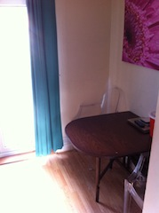
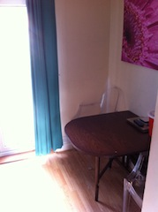

Charlotte Holmes
28, Scowcroft Drive,
Bishops Itchington
Southam
CV47 2YP
c.holmes8@hotmail.co.uk
07846619043


 


28, Scowcroft Drive,
Bishops Itchington
Southam
CV47 2YP
c.holmes8@hotmail.co.uk
07846619043
A-levels Photography C I.C.T Merit Food Technology C
G.C.S.Es 9 GCSE passes including I.C.T grade A and English and Maths grade B.
At the Menzies hotel I was part of a small team of 5 receptionists that work closely together to ensure that our guests received the best possible service we could deliver. My role at the hotel involved dealing with customer complaints taking payments from guests, banking money taken throughout the whole hotel, golf club and spa, answering telephone calls in a professional manner and making sure that the guest is always put first.
I have been working in a team to ensure customers get the best possible service within the company and find everything they are looking for. I have worked in a number of positions within B&Q including; ‘Meeter and Greeter’, On the shop floor (helping customers find what they are looking for, answering telephone calls and placing customer orders) I have also worked behind the tills (serving the customers and placing transactions).
dvpfnvfdbnvdfn......
All of my work experiences have involved working within a team. This involves communication, co-ordination and planning. For example in the pub, we had to ensure that the chef was on task with all meals, we were on top of things in the restaurant getting in as many customers as we possibly could and giving the best service we could to our customers. In the hotel it meant that we are always one step ahead so the time that the guests is at reception is kept to a minimum and their first impression is kept at a high quality standard.
I am currently studying a Computing degree in my second year at the university of Worcester.
I have skills and knowledge in customer service and providing customers with the best possible experience that they can encounter whilst being in the organisation. I am a confident person and have good skills in team work, especially communication between colleagues and costumers. I am looking for a position in which I can both use and develop further my skills.
Leadership: Taking a lead role on map reading when lost on our bronze duke of edinborough award. I found that taking charge when no-body else in the group could be motivated when lost on a mountain re-encouraged everybody and although not the right route home we got back. Computing – I have always had good grades when it comes to computing and this is what I am hoping to do in the future.Interests
Mentoring:I have also been a mentor since year 10 and found that doing this has given me confidence to talk to people and given me skills in listening. Within mentoring there were at times a lot of pressures put upon me but I found ways to both help me and the mentored.
Living life: Due to the work load and pressure of the a-levels that I am studying and the work shifts that I am having I have recently had to give up air cadets. I also like to play hockey and badminton at college with friends.
Skills
Good Team Work – I have always worked in a team in precious work and feel this is where I perform best.
Confident – I am able to ask people if they need any help if they are looking confused without hesitating.
People’s Person – I feel that I am an approachable person and easy to talk to.


28, Scowcroft Drive,
Bishops Itchington,
Southam,
CV47 2YP 07846619043 c.holmes8@hotmail.co.uk